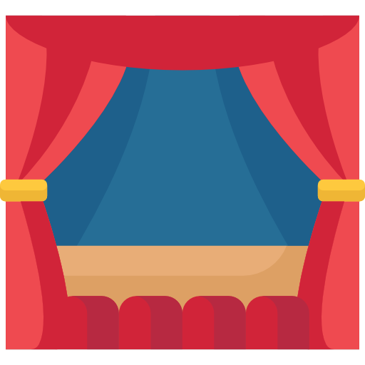
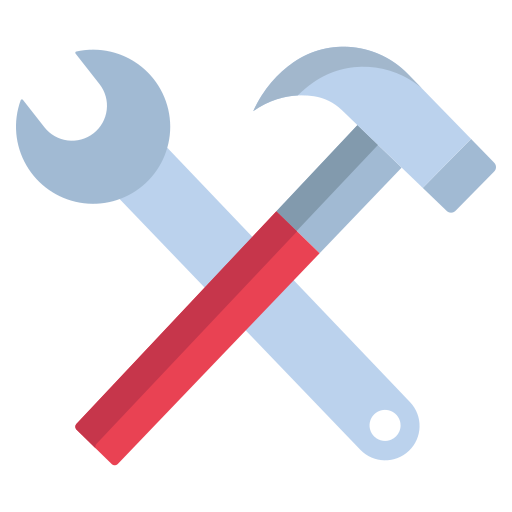

Hello, world! Welcome to my personal developer log. I am currently
working my way through The Odin Project. I built this site from scratch
to document my progress, solidify my skills, and prove that I can build
a working server without relying on fancy frameworks.

Behind the Scenes
Fun fact: you aren't just looking at a static webpage. This entire site
is being served by a custom backend I wrote myself using
and its built-in HTTP module. Every time you click a link, my server
catches the request, figures out what file you need, and sends it
directly to your browser.

The Stack So Far
Before diving into backend development, I spent a lot of time mastering
the frontend. Here is a quick look at what I have in my toolkit so far:
-
: Writing clean, semantic markup that is accessible and well-structured.

-
: Styling layouts using Flexbox, CSS Grid, and responsive design principles.

-
: Building interactive elements, manipulating the DOM, and creating Single Page Applications (SPAs).

-
: Breaking down complex user interfaces into reusable components and managing state for dynamic applications.

-
: (Work in progress!) Learning the fundamentals of server-side JavaScript, routing, and file systems.